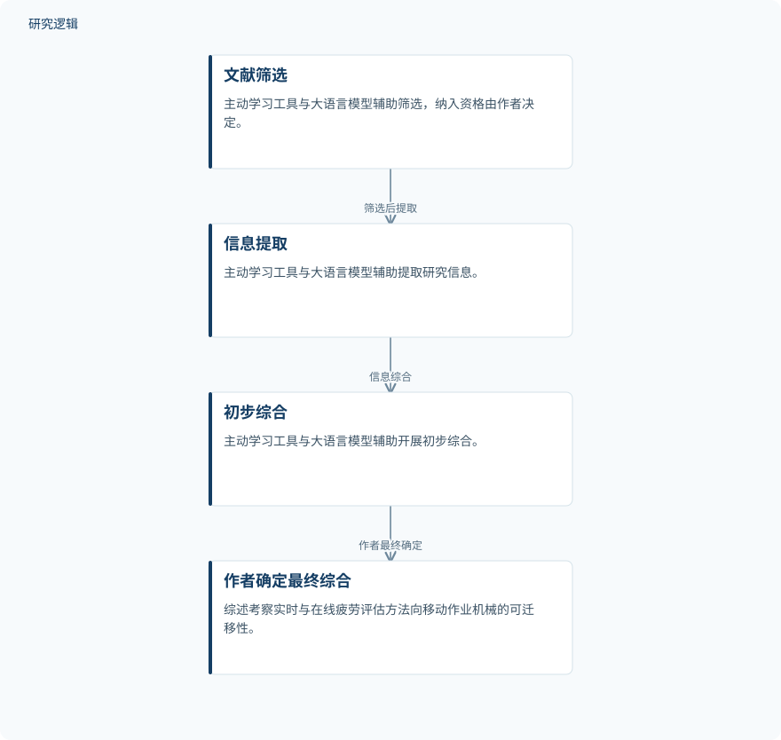

摘要解读
金属结构实时与在线疲劳评估：综述及其向移动作业机械的迁移适用性评估
Real-Time and Online Fatigue Assessment of Metallic Structures: A Review and Transferability Assessment for Mobile Working Machines
解读更新 2026-11-10 16:46 · 依据公开摘要整理，未核验全文细节
移动作业机械如何在传感有限、载荷复杂的运行现场评估疲劳？这篇范围综述梳理实时与在线疲劳评估方法，重点讨论其他工程领域的方法能否迁移到此类机械，并区分现有证据与理想化方案。
文章目录
从运行信息到疲劳判断，难点在现场
疲劳损伤限制金属结构的服役寿命，移动作业机械也不例外。运行期间获得的疲劳信息可支持监测、维护与控制，但复杂载荷、有限传感和恶劣环境，使方法部署面临挑战。
本文关注的不只是有哪些评估方法，而是它们与移动作业机械的需求是否匹配。作者结合机械特征与工程经验，将变幅或随机载荷下的承载结构及焊接细节确定为最相关的参考情形。
以范围综述梳理方法及其可迁移性
研究采用范围综述，纳入55项研究，考察金属结构实时与在线疲劳评估方法向移动作业机械迁移的适用性。主动学习工具与大语言模型辅助文献筛选、信息提取和初步综合，纳入资格及最终综合由作者决定。
摘要还说明，研究对所评述方法进行了层级分类。这一分类可帮助界定未来系统综述的范围；不能据此把本文理解为已经完成了各种方法的统一性能测试。
依据摘要整理的综述工作流程


仅概括摘要明确陈述的文献处理环节；主动学习工具与大语言模型提供辅助，作者负责纳入资格及最终综合，不代表论文原图。
下载 SVG图示关系说明
实线表示相邻阶段的信息流，虚线表示跨阶段联系或反馈。
文献筛选 → 信息提取：筛选后提取；信息提取 → 初步综合：信息综合；初步综合 → 作者确定最终综合：作者最终确定
损伤累积更贴近整机监测，但仍有缺口
多数纳入研究来自其他工程领域，直接面向移动作业机械的证据仍有限。综述中的损伤累积方法未涉及非线性损伤累积与载荷顺序效应；模型更新不常见，不确定性也很少被传播至疲劳输出。
对于整机层面的监测，作者认为损伤累积方法似乎比裂纹扩展方法更直接适配，因为前者可以利用有限传感估计得到的应力或应变历程。这是适配性判断，不等于证明前者在所有工况下都更准确。
作者另提出一种理想化方案，而非已验证成果：以最少传感进行虚拟或间接响应估计，结合服役期模型更新，以及考虑非线性效应和不确定性的损伤累积评估，并按预期用途匹配更新间隔，在机载端使用。
直接证据有限，验证范围仍需阅读全文确认
仅凭摘要，无法判断纳入研究的具体机械类型、试件或现场样本规模、传感配置及工况覆盖，也无法核对方法间比较的指标与条件。摘要未提供理想化方案的验证结果，不能将其预期用途写成已实现效果；这些信息未报告于摘要，不代表论文没有讨论。
阅读启发：先看证据如何跨越应用场景
阅读启发：进一步阅读时，可关注其他领域证据与移动作业机械之间的对应条件，以及有限传感如何支撑应力或应变历程估计。对于智能运维，还应区分大语言模型辅助综述的角色与机载疲劳评估的技术能力，前者并不构成后者有效性的验证。
以上为本站阅读启发与建议，不是论文已验证的结论。